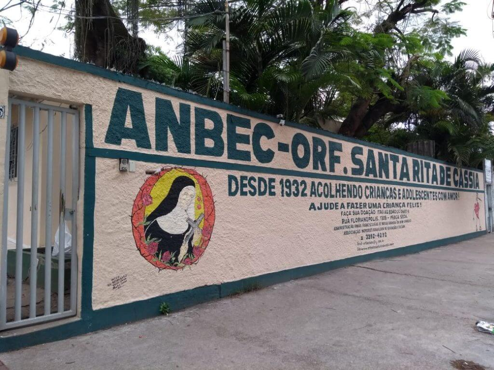

Orfanato Santa Rita de Cássia
O Orfanato Santa Rita de Cássia é um lugar que vive de carinho e amor doado pelas Irmãs Franciscanas, por voluntários, por doadores, por amigos e amigas e pela comunidade, para as meninas e adolescentes em situação de vulnerabilidade social em dois programas: Acolhimento institucional na faixa etária de 04 a 10 anos (abrigo) e Casa Dia faixa etária de 04 a 12 anos (externato).
Instruções para visita
Venha como se sentir a vontade e traga muito amor e paciência para dar.
Horário de visitas das 08h até 18h
Não atendemos fim de semana